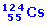

|
Un isótopo radiactivo
tiene un período de semidesintegración de 10 años.
Para una muestra de 80 mg de este isótopo, determina:
a) Su constante de desintegración
radiactiva
b) Masa que tendrá al cabo de
30 años
c) Masa que tenía hace 30 años |
¿Cuánto tarda una muestra
radiactiva de período de semidesintegración de 2 días
en reducirse al 1% del valor original? |
El I-131 tiene un período de semidesintegración
T = 8.04 días ¿Cuántos átomos de I-131 quedarán
en una muestra que inicialmente tiene N0 atomos de I-131 al
cabo de 16.08 días?
Considera los casos N0 = 1012 y N0 =
2. Comenta los resultados |
El Pb-209 sufre desintegración β
convirtiéndose en Bi-209, siendo el período de semidesintegración
3.3 h. Partiendo de una muestra de Pb-209 puro, calcula el porcentaje
de átomos de plomo y de bismuto que habrá al cabo de una
hora |
Calcula la actividad de un gramo de Co-60
Datos: Período de semidesintegración: 5.3 años,
Masa atómica: 58.94 u |
Una muestra de 1 g de radio (Masa atómica:
226 u) presenta una actividad de 3.7·1010 Bq. Calcula
su período de semidesintegración |
Disponemos 3 mg de Ra-226. Calcula:
a) Actividad de la muestra
b) Actividad cuando la muestra se haya reducido
a la tercera parte
Datos del Ra-226 Período de semidesintegración:
1600 años, Masa atómica: 226.025 u |
El  tiene
una vida media de 30.8 s. Si se parte de 6.2 μg. Se pide:
a) ¿Cuántos núcleos hay
en ese instante?
b) ¿Cuántos núcleos habrá
2 minutos después? ¿Cuál será la actividad
en ese momento? |
Disponemos de una muestra de 3 mg de I-131
cuyo período de semidesintegración es de 8 días.
Calcula el tiempo que deberá transcurrir para que la actividad
se reduzca a la cuarta parte del valor inicial |
La erradicación parcial de la glándula
tiroides en pacientes que sufren de hipertiroidismo se consigue gracias
a un compuesto que contiene el núclido radiactivo del I-131. Este
compuesto se inyecta en el cuerpo del paciente y se concentra en la tiroides
destruyendo sus células.
Determina cuántos gramos del núclido I-131 deben ser inyectados
en un paciente para conseguir una actividad de 3.7·109 Bq (desintegraciones/s).
El tiempo de vida medio del I-131 es 8.04 días |
En una excavación arqueológica
se ha encontrado una estatua de madera cuyo contenido de C-14 es el 58%
del que poseen las maderas actuales de la zona. Sabiendo que el período
de semidesintegración del C-14 es de 5570 años, determinar
la antigüedad de la estatua encontrada |
Un mineral de uranio contiene 1.120 g de
Pb-206 (Masa atómica: 205.974 u) por cada 2,740 g de
U-238 (Masa atómica: 238.050 u). Si todo el Pb-206 se ha formado
por desintegración del U-238 (Período de semidesintegración:
4.47·109 años) determina la edad de mineral |
Se tienen 100 g de una muestra radiactiva
y se observa que en un día se desintegra el 20% de la misma. Calcula:
a) Constante de desintegración
b) Período de semidesintegración
c) Vida media
d) Masa que quedará después
de 20 días |
Un dispositivo utilizado en medicina para
combatir, mediante radioterapia, ciertos tipos de tumores contiene una
muestra de 0.50 g de
El período de semidesintegración de este elemento es 5.27 años.
Determina la actividad, en desintegraciones por segundo, de la muestra
de material radiactivo |
Una muestra de madera procedente de la
caja de una momia egipcia da 13536 desintegraciones en un día por
cada gramo de carbono. Establece la edad de la caja
Datos: Una muestra actual de madera experimenta 920 desintegraciones
por hora por cada gramo de carbono. Período de semidesintegración
de C-14: 5730 años |
Se preparan 250
g de una sustancia radiactiva y al cabo de 24 horas se ha desintegrado
el 15% de la masa original. Se pide:
a) La constante de desintegración de
la sustancia
b) El período de semidesintegración
de la sustancia , así como su vida media o período
c) La masa que quedará sin desintegrar
al cabo de 10 días
|
¿Cuál es el período
de semidesintegración de un núcleo radiactivo cuya actividad
disminuye 1/8 al cabo de un día? |
Calcula el período de semidesintegración
de un núcleo radioactivo cuya actividad disminuye a la cuarta parte
al cabo de 48 horas |
El período de semidesintegración
de una muestra de polonio es 3 minutos. Calcula el porcentaje de cierta
masa inicial que quedará al cabo de 9 minutos |
a) Calcula la actividad de
una muestra radiactiva de masa 5 g que tiene una constante radiactiva
λ = 3·10-9 s-1 y cuya masa atómica
es 200 u
b) ¿Cuántos años deberíamos esperar
para que la masa radiactiva de la muestra se redujera a la décima
parte? |
|
En una excavación se ha encontrado
una herramienta de madera de roble. Sometida a la prueba del C-14 se observa
que se desintegran 100 átomos cada hora, mientras que una muestra
de madera de roble actual presenta una tasa de desintegración de
600 átomos/hora. Sabiendo que el período de semidesintegración
del C-14 es de 5570 años, calcula la antigüedad de la herramienta |